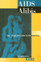
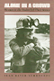
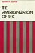
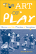

Browse
other Titles:
A B C
D E F
G H I
J K L
M N O
P Q R
S T U
V W X
Y Z |

|
�A Road to Peace and Freedom�
The International Workers Order and the Struggle for Economic Justice and Civil Rights, 1930–1954
Zecker, Robert M.
430 pp • 6x9 • Fall 2017
paper 978-1-4399-1516-5
cloth 978-1-4399-1515-8 |

|
A is for Art Museum
Friedland, Katy and Marla K. Shoemaker
64 pp • 8.25x8.25 • Fall 2008
cloth 978-1-59213-963-7 |

|
Abandoned
to Their Fate
Social Policy and Practice Toward Severely Retarded People in
America, 1820-1920
Ferguson,
Philip M.
232 pp • 5.5x8.25 • Spring 1994
cloth 978-1-56639-154-2 |

|
Abortion
Between Freedom and Necessity
Hadley,
Janet
256 pp • 6x9 • Fall 1996
paper 978-1-56639-591-5
cloth 978-1-56639-506-9 |

|
Abortion
Rights as Religious Freedom
Wenz,
Peter S.
344 pp • Fall 1991
paper 978-0-87722-858-5
cloth 978-0-87722-857-8 |

|
Abuse of Power
How Cold War Surveillance and Secrecy Policy Shaped the Response to 9/11
Theoharis, Athan
232 pp • 6x9 • Spring 2011
paper 978-1-4399-0665-1
cloth 978-1-4399-0664-4
|

|
Accent
on Privilege
English Identities and Anglophilia in the U.S.
Jones,
Katharine W.
304 pp • 6x9 • Fall 2001
paper 978-1-56639-901-2
cloth 978-1-56639-900-5
|

|
Accessible Citizenships
Disability, Nation, and the Cultural Politics of Greater Mexico
Minich, Julie Avril
240 pp • 5.5x8.5 • Fall 2013
paper 978-1-4399-1070-2
cloth 978-1-4399-1069-6
|

|
Accidental Immigrants and the Search for Home
Women, Cultural Identity, and Community
Kelley, Carol E.
190 pp • 6x9 • Spring 2013
paper 978-1-4399-0946-1
cloth 978-1-4399-0945-4 |

|
Achieving
Against the Odds
How Academics Become Teachers of Diverse Students
edited
by Kingston-Mann, Esther and Tim Sieber
240 pp • 6x9 • Spring 2001
paper 978-1-56639-851-0
cloth 978-1-56639-850-3
|

|
A City within a City
The Black Freedom Struggle in Grand Rapids, Michigan
Robinson, Todd E.
248 pp • 6x9 • Fall 2012
paper 978-1-4399-0922-5
cloth 978-1-4399-0921-8
|

|
Acres
of Diamonds
Conwell,
Russell H., foreword by Russell F. Weigley, introduction by
David Adamany
96 pp • 5x7 • Spring 2002
cloth 978-1-56639-962-3
|

|
Across
the Pacific
Asian Americans and Globalization
edited
by Hu-DeHart, Evelyn
232 pp • 6x9 • Spring 1999
paper 978-1-56639-824-4
cloth 978-1-56639-710-0
|

|
Across
the Red Line
Stories from the Surgical Life
Karl,
Richard C.
160 pp • 5.5x8.25 • Fall 2001
paper 978-1-59213-193-8
cloth 978-1-56639-912-8
|
 |
Addressing Violence Against Women on College Campuses
edited by Kaukinen, Catherine, Michelle Hughes Miller, and R�chael A. Powers
330 pp • 6x9 • Spring 2017
paper 978-1-4399-1376-5
cloth 978-1-4399-1375-8 |
|
Advice
and Planning
Krieger,
Martin H.
230 pp • Spring 1981
cloth 978-0-87722-217-0 |

|
Aesthetic
Legacies
Krukowski,
Lucian
264 pp • 5.5x8.25 • Fall 1992
cloth 978-0-87722-972-8 |
|
Aesthetics
of Environment
Berleant,
Arnold
256 pp • 6x9 • Fall 1992
paper 978-1-56639-334-8
cloth 978-0-87722-993-3
|

|
Affirmative
Action and the University
A Philosophical Inquiry
edited
by Cahn, Steven M.
320 pp • 6x9 • Spring 1993
paper 978-1-56639-399-7
cloth 978-1-56639-030-9 |

|
The
Affordable City
Toward a Third Sector Housing Policy
edited
by Davis, John Emmeus
320 pp • 6x9 • Fall 1993
cloth 978-1-56639-109-2
|

|
The
African American Jeremiad
Appeals for Justice in America
Howard-Pitney,
David
288 pp • 5.5x8.25 • Fall 2005
paper 978-1-59213-415-1
cloth 978-1-59213-328-4
|

|
African
American Perspectives on Political Science
Rich, Wilber C., foreword by Charles V. Hamilton
456 pp • 6x9 • Fall 2006
paper 978-1-59213-109-9
cloth 978-1-59213-108-2
|

|
African
Intellectual Heritage
A Book of Sources
edited
by Asante, Molefi Kete and Abu S. Abarry
848 pp • 7x10 • Fall 1995
paper 978-1-56639-403-1
cloth 978-1-56639-402-4 |

|
The African Transformation of Western Medicine and the Dynamics of Global Cultural Exchange
Baronov, David
264 pp • 6x9• Fall 2008
paper 978-1-59213-916-3
cloth 978-1-59213-915-6
|

|
African-American
Reflections on Brazil's Racial Paradise
edited
by Hellwig, David J.
276 pp • 5.5x8.25 • Spring 1992
cloth 978-0-87722-892-9 |
 |
African American Writing
A Literary Approach
Sollors, Werner
296 pp • 6x9 • Spring 2016
paper 978-1-4399-1337-6
cloth 978-1-4399-1336-9
|

|
Afro-Caribbean Religions
An Introduction to Their Historical, Cultural, and Sacred Traditions
Murrell, N. Samuel
440 pp • 6x9 • Fall 2009
paper 978-1-4399-0041-3
cloth 978-1-4399-0040-6
|

|
The
Afrocentric Idea
Asante,
Molefi Kete
256 pp • 5.5x8.2 • Fall 1997
paper 978-1-56639-595-3
cloth 978-1-56639-594-6
|

|
AFSCME's Philadelphia Story
Municipal Workers and Urban Power in the Twentieth Century
Ryan, Francis
320 pp • 6x9 • Fall 2010
paper 978-1-4399-0279-0
cloth 978-1-4399-0278-3
|

|
Afterimage
Film, Trauma, and the Holocaust
Hirsch,
Joshua
232 pp • 6x9 • Fall 2003
paper 978-1-59213-209-6
cloth 978-1-59213-208-9
|
|
Against Capital in the Twenty-First Century
A Reader of Radical Undercurrents
edited by Asimakopoulos, John and Richard Gilman-Opalsky
390 pp • 6x9 • Fall 2017
paper 978-1-4399-1358-1
cloth 978-1-4399-1357-4
|

|
Against
Instinct
From Biology to Philosophical Psychology
Senchuk,
Dennis M.
200 pp • Spring 1991
cloth 978-0-87722-815-8 |

|
Against the Deportation Terror
Organizing for Immigrant Rights in the Twentieth Century
Buff, Rachel Ida
282 pp • 6x9 • Fall 2017
paper 978-1-4399-1534-9
cloth 978-1-4399-1533-2 |

|
Agency-Based
Social Work
Neglected Aspects of Clinical Practice
Weissman,
Harold, Irwin Epstein and Andrea Savage
384 pp • Fall 1983
paper 978-0-87722-330-6
cloth 978-0-87722-322-1 |

|
Aggression
Its Causes, Consequences, and Control
Berkowitz,
Leonard
496 pp • 6.4x9.3 • Spring 1993
cloth 978-1-56639-033-0
|

|
Aging
and the Law
An Interdisciplinary Reader
edited
by Frolik, Lawrence A.
690 pp • 7x10 • Fall 1998
paper 978-1-56639-653-0
cloth 978-1-56639-652-3
|

|
Agricultural
and Pastoral Societies in Ancient and Classical History
edited
by Adas, Michael
376 pp • 7x10 • Fall 2000
paper 978-1-56639-832-9
cloth 978-1-56639-831-2 |

|
AIDS
Crisis in Professional Ethics
edited
by Cohen, Elliot D. and Michael Davis
288 pp • 6x9 • Spring 1994
paper 978-1-56639-165-8
cloth 978-1-56639-164-1 |

|
AIDS
Alibis
Sex, Drugs, and Crime in the Americas
Kane,
Stephanie
256 pp • 5.5x8.25 • Spring 1998
paper 978-1-56639-628-8
cloth 978-1-56639-627-1
|

|
AIDS,
The Winter War
Kahn,
Arthur D.
224 pp • 6x9 • Fall 1992
cloth 978-1-56639-018-7 |

|
Ain't
Gonna Let Nobody Turn Me Round
The Pursuit of Racial Justice in the Rural South
Couto,
Richard A.
440 pp • 6x9 • Spring 1991
paper 978-1-56639-004-0
cloth 978-0-87722-806-6 |

|
Air
Wars
The Fight to Reclaim Public Broadcasting
Starr,
Jerold M.
352 pp • 6x9 • Fall 2001
paper 978-1-56639-913-5
|

|
All
is Never Said
The Story of Odette Harper Hines
Rollins,
Judith
288 pp • 6x9 • Spring 1995
paper 978-1-56639-308-9
cloth 978-1-56639-307-2
|

|
All
Talk
The Talkshow in Media Culture
Munson,
Wayne
288 pp • 6x9 • Fall 1992
paper 978-1-56639-194-8
cloth 978-0-87722-995-7 |

|
Alone
in a Crowd
Women in the Trades Tell Their Stories
Schroedel,
Jean Reith
280 pp • Spring 1985
paper 978-0-87722-397-9
cloth 978-0-87722-378-8 |

|
Alphabet Movers
Benzwie, Teresa, Illustrated by Robert Bender
32 pp • 8.5x11 • Spring 2011
cloth 978-1-930798-08-3 |

|
Alternative
Health Care
Medicine, Miracle, or Mirage?
Goldstein,
Michael S.
280 pp • 5.5x8.25 • Spring 1999
paper 978-1-56639-678-3
cloth 978-1-56639-677-6
|

|
A Midwestern Mosaic
Immigration and Political Socialization in Rural America
Lay, J. Celeste
238 pp • 6x6 • Spring 2012
paper 978-1-4399-0793-1
cloth 978-1-4399-0792-4 |
|
Am
I Still a Woman?
Hysterectomy and Gender Identity
Elson,
Jean
264 pp • 5.5x8.25 • Fall 2003
paper 978-1-59213-211-9
cloth 978-1-59213-210-2
|

|
America's First Adventure in China
Trade, Treaties, Opium, and Salvation
Haddad, John R.
294 pp • 6x9 • Spring 2013
paper 978-1-4399-0690-3
cloth 978-1-4399-0689-7
|

|
America's
Jews in Transition
Waxman,
Chaim
290 pp • Fall 1983
paper 978-0-87722-329-0
cloth 978-0-87722-321-4 |

|
America's
Longest War
The United States and Vietnam, 1950-1975
Herring,
George C.
336 pp • Spring 1986
cloth 978-0-87722-419-8 |
|
American
Communism and Black Americans
A Documentary History, 1930-1934, Volume 2
Foner,
Philip S. and Herbert Shapiro
416 pp • Fall 1990
cloth 978-0-87722-761-8 |

|
American
Conversations
Puerto Ricans, White Ethnics, and Multicultural Education
Bigler,
Ellen
296 pp • 5.5x8.25 • Spring 1999
paper 978-1-56639-688-2
cloth 978-1-56639-687-5
|
|
American Culture and Religious Diversity
A Saudi Perspective
Alhomoudi, Fahad
176 pp • 6x9 • Fall 2011
paper 978-0-931214-13-4 |

|
The
American Diary of a Japanese Girl
An Annotated Edition
Noguchi, Yone, edited by Edward Marx and Laura E. Franey
224 pp • 6x9 • Fall 2006
paper 978-1-59213-555-4
cloth 978-1-59213-554-7
|

|
The American Dream in the 21st Century
edited by Hanson, Sandra L. and John Kenneth White
168 pp • 5.5x8.25 • Spring 2011
paper 978-1-4399-0315-4
cloth 978-1-4399-0314-8
|
|
American Dunkirk
The Waterborne Evacuation of Manhattan on 9/11
Kendra, James and Tricia Wachtendorf
194 pp • 5.5x8.25 • Spring 2016
paper 978-1-4399-0821-1
cloth 978-1-4399-0820-4
|

|
American
Federalism and Public Policy
How the System Works
Anton,
Thomas
320 pp • 6x9 • Fall 1988
cloth 978-0-87722-577-5
|

|
An
American Feminist in Palestine
The Intifada Years
Gluck,
Sherna Berger
248 pp • 6x9 • Fall 1994
paper 978-1-56639-191-7
cloth 978-1-56639-190-0
|

|
American Heathens
The Politics of Identity in a Pagan Religious Movement
Snook, Jennifer
242 pp • 6x9 • Spring 2015
paper 978-1-4399-1097-9
cloth 978-1-4399-1096-2 |
|
American History Now
Edited for the American Historical Association by Eric Foner and Lisa McGirr
440 pp • 6x9 • Spring 2011
paper 978-1-4399-0244-8
cloth 978-1-4399-0243-1
|

|
The
American Perception of Class
Vanneman,
Reeve and Lynn Weber Cannon
384 pp • 6x9 • Spring 1987
paper 978-0-87722-593-5
cloth 978-0-87722-436-5 |

|
The
Americanization of Sex
Schur,
Edwin M.
248 pp • Spring 1988
paper 978-0-87722-633-8
cloth 978-0-87722-521-8 |

|
The Americanization of Social Science
Intellectuals and Public Responsibility in the Postwar United States
Haney, David Paul
296 pp • 6x9 • Fall 2007
cloth 978-1-59213-713-8
|

|
Americans First
Chinese Americans and the Second World War
Wong, K. Scott
268 pp • 5.5x8.25 • Spring 2008
paper 978-1-59213-840-1
|
|
Andy
Warhol's Blow Job
Grundmann,
Roy
240 pp • 7x10 • Fall 2002
paper 978-1-56639-972-2
cloth 978-1-56639-971-5
|

|
Animal
Passions and Beastly Virtues
Reflections on Redecorating Nature
Bekoff,
Marc, foreword by Jane Goodall 320 pp •
6x9 • Fall 2005
paper 978-1-59213-348-2
cloth 978-1-59213-347-5
|
|
Animal
Sacrifices
Religious Perspectives on the Use of Animals in Science
edited
by Regan, Tom, introduction by John Bowker
288 pp • Spring 1986
paper 978-0-87722-511-9
cloth 978-0-87722-411-2 |

|
Animals at Play
Rules of the Game
Bekoff, Marc, illustrations by Michael J. DiMotta
32 pp • 10x7• Fall 2008
cloth 978-1-59213-551-6 |

|
Animals,
Property, and the Law
Francione,
Gary L., foreword by William M. Kunstler, Esq.
368 pp • 6x9 • Spring 1995
paper 978-1-56639-284-6
cloth 978-1-56639-283-9
|

|
An Immigrant Neighborhood
Interethnic and Interracial Encounters in New York before 1930
Yee, Shirley J.
256 pp • 5.5x8.25 • Fall 2011
paper 978-1-59213-128-0
cloth 978-1-59213-127-3
|

|
Another
Arabesque
Syrian-Lebanese Ethnicity in Neoliberal Brazil
Karam, John Tofik
232 pp • 6x9 • Fall 2006
paper 978-1-59213-540-0
cloth 978-1-59213-539-4
|
|
Another
Chance
America Since World War II
Gilbert,
James
256 pp • Spring 1981
cloth 978-0-87722-224-8 |

|
Antifoundationalism
Old and New
edited
by Rockmore, Tom and Beth J. Singer
253 pp • Fall 1991
cloth 978-0-87722-881-3 |

|
Applications
of Feminist Legal Theory to Women's Lives
Sex, Violence, Work, and Reproduction
edited
by Weisberg, D. Kelly
1200 pp • 7x10 • Spring 1996
paper 978-1-56639-424-6
cloth 978-1-56639-423-9
|

|
Arabs
in America
Building a New Future
edited
by Suleiman, Michael W.
368 pp • 7x10 • Fall 1999
paper 978-1-56639-727-8
cloth 978-1-56639-726-1
|

|
Arbitrariness
of the Death Penalty
Nakell,
Barry and Kenneth A. Hardy
Fall 1986
cloth 978-0-87722-443-3 |

|
The Archival Turn in Feminism
Outrage in Order
Eichhorn, Kate
208 pp • 5.5x8.5 • Fall 2013
paper 978-1-4399-0952-2
cloth 978-1-4399-0951-5
|

|
Arms
and the Enlisted Woman
Stiehm,
Judith Hicks
352 pp • Fall 1988
paper 978-0-87722-705-2
cloth 978-0-87722-565-2 |

|
Arsenio Rodr�guez and the Transnational Flows of Latin Popular Music
Garcia,
David F. 224 pp � 6x9 � Spring 2006
paper 978-1-59213-386-4
cloth 978-1-59213-385-7
|

|
Art
and Engagement
Berleant,
Arnold
288 pp • 6x9 • Spring 1991
paper 978-1-56639-084-2
cloth 978-0-87722-797-7 |

|
Art
for The Masses
A Radical Magazine and Its Graphics, 1911-1917
Zurier,
Rebecca, introduction by Leslie Fishbein
240 pp • 9.25x12 • Fall 1987
paper 978-0-87722-670-3
cloth 978-0-87722-513-3 |

|
Art
in Cinema
Documents Toward a History of the Film Society
MacDonald,
Scott 320 pp • 7x10 • Fall 2005
cloth 978-1-59213-425-0
|
|
Art Museum Opposites
Friedland, Katy and Marla K. Shoemaker
44 pp • 8.5x11 • Fall 2010
cloth 978-1-4399-0523-4
|

|
The Art of Play
Recess and the Practice of Invention
Beresin, Anna R.
202 pp • 6x9 • Fall 2013
paper 978-1-4399-1094-8
cloth 978-1-4399-1093-1
|
|
Art, Politics, and Development
How Linear Perspective Shaped Policies in the Western World
Lepenies, Philipp H.
214 pp • 6x9 • Fall 2013
cloth 978-1-4399-1084-9
|

|
Artifacts,
Art Works, and Agency
Dipert,
Randall R.
288 pp • 6x9 • Fall 1992
cloth 978-0-87722-990-2 |

|
As French As Everyone Else?
A Survey of French Citizens of Maghrebin, African, and Turkish Origin
Brouard, Sylvain and Vincent Tiberj
Foreword by Pascal Perrineau, Translated by Jennifer Fredett
152 pp • 5.5x8.25 • Spring 2011
paper 978-1-4399-0296-7
cloth 978-1-4399-0295-0
|

|
The Asian American Avant-Garde
Universalist Aspirations in Modernist Literature and Art
Clark, Audrey Wu
246 pp • 6x9 • Fall 2015
paper 978-1-4399-1227-0
cloth 978-1-4399-1226-3 |

|
Asian
American Literature
An Introduction to the Writings and Their Social Context
Kim,
Elaine H.
363 pp • Spring 1982
paper 978-0-87722-352-8
cloth 978-0-87722-260-6 |

|
The
Asian American Movement
Wei,
William
376 pp • 6x9 • Spring 1993
paper 978-1-56639-183-2
cloth 978-1-56639-049-1
|

|
Asian
American Panethnicity
Espiritu,
Yen Le
238 pp • 6x9 • Fall 1992
paper 978-1-56639-096-5
cloth 978-0-87722-955-1
|

|
Asian American Plays for a New Generation
Edited by Lee, Josephine, Don Eitel, and R. A. Shiomi
336 pp • 6x9 • Spring 2011
paper 978-1-4399-0516-6
cloth 978-1-4399-0515-9
|

|
Asian American Women's Popular Literature
Feminizing Genres and Neoliberal Belonging
Thoma, Pamela
232 pp • 6x9 • Fall 2013
paper 978-1-4399-1019-1
cloth 978-1-4399-1018-4 |

|
At
a Loss for Words
How America Is Failing Our Children and What We Can Do about It
Bardige,
Betty, foreword by T. Berry Brazelton, M.D.
272 pp • 6x9 • Spring 2005
paper 978-1-59213-393-2
cloth 978-1-59213-392-5
|
|
Atheism
A Philosophical Justification
Martin,
Michael
254 pp • 6x9 • Fall 1989
paper 978-0-87722-943-8
cloth 978-0-87722-642-0
|

|
Atlanta
Race, Class, and Urban Expansion
Keating,
Larry
248 pp • 6x9 • Fall 2000
paper 978-1-56639-821-3
cloth 978-1-56639-820-6
|

|
Atlanta Unbound
Enabling Sprawl through Policy and Planning
Basmajian, Carlton Wade
288 pp • 7x10 • Fall 2013
paper 978-1-4399-0940-9
cloth 978-1-4399-0939-3 |

|
The
Atlas of Pennsylvania
edited
by Cuff, David J., William J. Young, Edward K. Muller, Wilbur
Zelinsky and Ronald F. Abler
304 pp • 13.25x15.5 • Fall 1989
cloth 978-0-87722-618-5 |

|
The Audacity of Hoop
Basketball and the Age of Obama
Wolff, Alexander
224 pp • 10x8 • Fall 2015
cloth 978-1-4399-1309-3 |